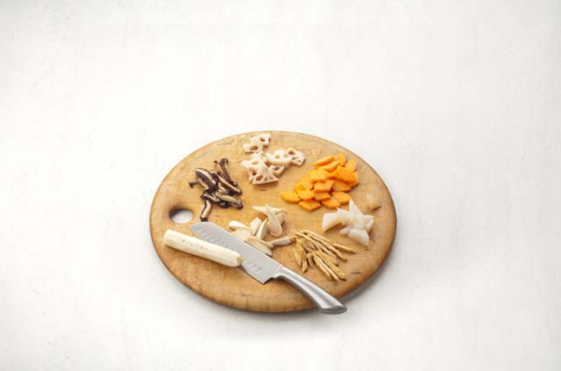
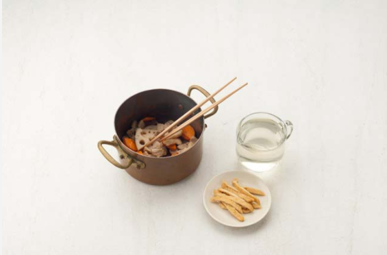
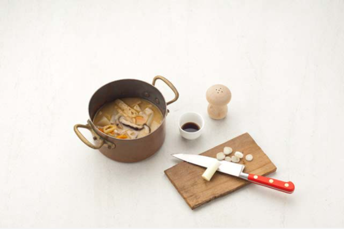

Japanese Food


재료 리스트
삼겹살 100g | 우엉 1/2대 | 당근 1/3개 | 표고버섯 2장 | 유부 3장 | 대파(흰부분) 1/2대
일본식 미소 된장국 양념( 소금 | 미소 4큰술 | 참기름 1작은 술 | 다시마 1장 | 물 1L )
레시피
1. 우엉은 껍질을 벗겨 삼각형 모양으로 자르고, 당근과 연근은 껍질을 벗겨 5mm 두께로 자른 뒤 4등분해주세요.
곤약은 한 입 크기 삼각형으로 자르고 표고버섯은 얇게 썬 뒤 유부는 곱게 채썰고 삼겹살은 2cm폭으로 썰어주세요.

2. 달군 냄비에 참기름을 두르고 삼겹살을 넣어 볶다가 우엉과 당근, 표고, 곤약을 넣고 가볍게 볶은 뒤 유부를 넣고 다시마물을 부어주세요.

3. 끓어오르면 중간불로 줄인 뒤 미소를 풀어 3분 정도 끓여준 뒤
쏭쏭 썬 대파를 넣고 1분 정도 더 끓인 뒤 간장과 소금으로 간을 맞춰주세요.

일본식 미소 된장국 완성 !!